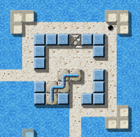

Level des MonatsJeden Monat werfen wir einen näheren Blick auf einen herausragenden Level. Herausragende Levels sind dabei solche, die sich durch die höchsten Bewertungen durch die Spieler auszeichnen, und dabei zugleich von genügend vielen Spielern auch bewertet wurden. Es ist also Ihre Wahl, die den Level des Monats bestimmt. Bitte werten Sie Levels, nachdem Sie sie gespielt haben, und vergessen Sie nicht, die Wertungen zusammen mit Ihren Spielergebnissen zum Ende eines jeden Monats uns zuzusenden. Sie können alle vorigen Level des Monats in unserem Archiv finden. Februar 2008: „Puzzle Puzzles“ von Raoul BourquinEs beginnt ein wenig wie „Sierpinsky“, unser Level des Monats Februar 2008 - während sie sich ihren Weg durch die ersten zwei Bildschirme schlängelt, mag unsere schwarze Murmel an einen weiteren Geschicklichkeits-Parcour denken. Aber sobald sie den dritten erreicht, und dann den vierten, entfaltet sich der Level wie eine Juliamenge, und vor uns liegt eine Landschaft angefüllt mit Rätseln, stärker miteinander verwickelt, als jedes Fraktal sein könnte. Willkommen zu „Puzzle Puzzles“! 
Enigma VI # 55 - Puzzle Puzzles
„Puzzle Puzzles“ listet sich auf unserer Favoritentabelle auf Platz sechs ein, kurz vor seinem Namensvetter „Labyrinth of Puzzles“. Unser Level des Jahres 2007, „Island Labyrinth“ zeigte diesen Monat eine kleine Schwäche, und sank in seinem Rating um maginale 0.05 Punkte ab - genug für „Quadropolis“, seine Führungsposition zurückzufordern, die es sich nun mit „Island Labyrinth“ teilt. Auf den mittleren Rängen erfuhren einige Levels ähnliche Abstufungen, nur „Pneumatic Delivery“ war in der Lage, ein paar positive Bewertungen zu ergattern und sprang damit über die 8-Punkte-Marke, das erste Mal wieder seit Juli '07. „Ich musste ein Bauingenieur werden“Man sieht viel von Raouls Entwicklung hin zum Meister des Leveldesigns: Beginnend mit dem relativ uninteressanten „Life's Cross“ als erstem veröffentlichten Level, arbeitete er sich durch verschiedene Meditationslandschaften und „Eternal circulation“, wobei seine Levels immer komplizierter und subtiler wurden. Seine frühen Werke waren Onescreener oder beinahe Onescreener, und diese Tradition erreichte ihren (bisherigen) Höhepunkt im unglaublichen „Industrial Puzzles“. Ich denke, „Space Station“ war sein erster größerer Level, und mit „Puzzle Puzzles“ errang er nun seinen ersten Level des Monats.
„Puzzle Puzzles“ ist eines derjenigen Level, die ich für lange Zeit
nicht lösen konnte, und auch in seinen Rätseln sehr schwer ist. Der Level, der
in einer Meereslandschaft spielt, statt einem von Wänden umgebenen Raum,
unterscheidet sich in ausgeprägter Weise von anderen „Leveln des
Monats“, und das macht es uns fast einfach, diese Meereslandschaft als
Ganzes zu erblicken. Als ich nun den Level zum ersten Mal gespielt hatte, schien
der Level nicht viele komplexe Schwierigkeiten aufzuwerfen. Dazu kam, dass ich
vielleicht gedacht habe, ich könnte ihn auf einfache Weise lösen. Aber ich lag
falsch, und fühlte mich etwas eingebildet. Es war schwer für mich, den Level zu
lösen.
Ich begann mit dem einfachen Modus. Ich musste ein Bauingenieur werden, um eine
Brücke über den See zu bauen, und den Level zu lösen. Aber unerwarteterweise
fand ich es schwierig, diese Aufgaben zu erfüllen, aufgrund der X-förmigen
Drahtgestelle (st-grate1) und Abhänge (fl-gradient) um die Insel mit den
Puzzlesteinen und zerbrochenen Flaschen (it-booze-broken). Und das war noch
nicht mal alles - der Level bietet weitere Hindernisse, beispielsweise fand ich
es schwierig, eine unsichtbare Murmel zu manövrieren, den das benötigt
Geschicklichkeit, Geduld und Schnelligkeit. Folglich haben diese auch hohe
Schwierigkeits-Bewertungen für den Level, ebenso wie Intelligenz und Wissen.
Ich mag solche Levels, die einem gleich mehrere Fähigkeiten stark abverlangen.
Nachdem ich den einfachen Modus gelöst hatte, war ich nicht sogleich in der
Lage, den schweren Modus zu lösen, da die Strukturen ziemlich verschieden sind.
So brauchte ich viel Zeit, ein noch exzellenterer Bauingenieur zu werden. 'Zu
werden' ist höchst schwierig, aber auch höchst unterhaltsam. Und die X-förmigen
Drahtgestelle (st-grate1) sind ein wichtiges Hindernis, wären sie nicht da,
hätte ich es früher gelöst. Außerdem wusste ich schon, wie der einfache Modus
zu lösen ist, und war entsprechend verwirrt, als dieser Ansatz im schwierigen
Modus nicht mehr funktionierte.
Abschließend bewundere ich Raoul Bourquin sehr stark, und ich denke, dass
Leute, die so prächtige Levels erschaffen, reichliche kreative Fähigkeiten
besitzen, und ohne diese, könnte ich nicht so glückliche Zeiten mit Enigma
verbringen, und neue großartige Levels in der Zukunft erwarten.
Ja, hoffen wir das! :-) „'Puzzle Puzzles' übt schon eine gewisse Faszination auf mich aus“
Das erste Hindernis …
Doch, „Puzzle Puzzles“ ist wirklich eine so seltsame Mischung aus
schwierig und leicht, dass ich oft verwundert dasitze und mich frage, warum ich
mich denn mit einem so einfachen und leicht zu durchschauenden Level so schwer
tue, dann wieder gibt es die Tage, wo ich überhaupt nichts mehr kapiere, und ich
mich frage, warum der Level „nur“ mit 84 Punkten in der
Gesamtschwierigkeitsskala eingestuft wird.
Trotzdem, „Puzzle Puzzles“ übt schon eine gewisse Faszination auf mich
aus, zwar nicht so stark wie beispielsweise „Houdini“, aber dennoch
hab' ich mehr als ein Dutzend mal versucht, den Rätseln von Raouls „Puzzle
Puzzles“ auf die Schliche zu kommen.
Ich glaube es liegt am Design. Diese Mischung aus fl-water und diesem
hellen Sand-Boden hat etwas Charismatisches, das durchaus mit dem Design
von „Island Labyrinth“ und „Temple of Gold“ mithalten kann.
Der Level beginnt vielversprechend. Dieser sich in Serpentinen durch das Meer
windende Weg erinnert an den Beginn eines Fantasy-Adventure-Movies. Ob
„Puzzle Puzzles“ hält, was es verspricht? - Ich weiß es nicht. Aber
Tausende von Enigma-Fans können nicht irren: Willkommen LotM 2/2008. ;-)
„Puzzle Puzzles“ ist einer von den 7 Leveln aus Ronalds geheimer Top
60 Liste, die ich noch nicht meistern konnte. 3 davon entstammen Ronalds Level
Lab, und ich kann mich nicht des Eindrucks erwehren, dass Ronald nach
„Temple of Gold“ auch bei „Puzzle Puzzles“ die Finger im
Spiel hatte!? Anders allerdings als bei „Temple of Gold“ kommt es mir
so vor, als wäre PP der einzige Level in ganz Enigma, bei dem die einfache
Variante schwieriger ist als die schwierige! Ich kann mich natürlich täuschen,
da ich weder die einfache schwierige noch die schwierige einfache Variante
bisher bewältigen konnte. *leise lach*
Tatsächlich liegt Harry absolut richtig. Hier sind Ronalds Erfahrungen zum Feinschliff unseres Levels des Monats:
Am 23. November 2006, nur ein Tag nach dem Betarelease von Enigma 1.00,
schickte Raoul mir eine erste Version seines „Puzzle Puzzles“, und
fragte nach einer kurzen Suche nach Abkürzungen, da er plante, diesen Level noch
zum finalen 1.00-Release hinzuzufügen, der zwei Wochen später kommen sollte.
Es war mir recht offenkundig, dass die Kontrolle über den mächtgen Zauberstab
it-wand der Schlüsselfaktor zu diesem Level war. Der Spieler benötigt ihn, aber
er sollte zu keinem anderen Zeitpunkt oder anderswo benutzt werden können. Wir
brauchten 17 Revisionen von Vorschlägen und erkannten Abkürzungen von beiden
Seiten, bis wir den Levelteil unten rechts so weit hatten, dass er alle unsere
Anforderungen erfüllte.
Aber die Reparatur hatte zwei Nebeneffekte. Zum einen schlug ich vor, die
„Kirschen-Insel“ auf eine Weise hinzuzufügen, die lokal eine
kompliziertere Lösung im schwierigen Modus als im einfachen erzwang. Ja, man
kann mich wohl Wiederholungstäter nennen, da ich dasselbe mit „Temple of
Gold“ gemacht habe. Halten Sie sich an Ryujuns Rat, und lösen Sie zuerst
den einfachen Modus!

… und das zweite!
Das Extraleben nicht vergessen.
Zweitens habe ich gesehen, dass es Enigma an einem Stein mangelt, mit dem der
Autor auf einfache Weise erzwingen kann, dass die Murmel nur ohne einen
bestimmten kritischen Gegenstand in ihrem Inventar passieren kann.
Inzwischen haben wir viele weitere Situationen entdekct, in denen solch ein
Stein fehlt, z.B. würden Gemeinschafts-Levels enorm von so einem Stein
profitieren. Folglich hat dieser Level möglicherweise eine sinnvolle Ergänzung
unseres Objektzoos initiiert.
Und ein weiterer Kommentar von einem LotM-Autorenkollegen:
Wenn man „Puzzle Puzzles“ zum ersten Mal spielt, hat man
wahrscheinlich zunächst keine Ahnung, was man eigentlich machen soll. Doch
sobald man einmal die Oxydsteine zu Gesicht bekommen hat, wird man wissen, worum
es geht: Ein Stein soll quer über die gesamte Karte befördert werden. Und obwohl
sich das alleine schon schwierig genug anhört, wartet noch eine weitaus größere
Herausforderung auf den Spieler, wenn sich der Stein erst an seiner vorgesehenen
Stelle befindet. Doch das sind genau die Levels, die ich gerne spiele. Man
sieht, was man machen muss, überlegt sich die verschiedensten
Lösungsmöglichkeiten, aber irgendwie scheint keine zu funktionieren und man
sitzt viel länger vor dem Level als man eigentlich geplant hatte.
„Puzzle Puzzles“ besticht dabei vor allem durch gutes Design und tolle
Rätsel (das sagt ja schon der Name). Meiner Meinung nach ist diese Landschaft
eine der besten überhaupt in Enigma und bekommt deshalb von mir auch volle 10
Punkte. Hoffentlich bekommen wir in Zukunft noch mehr Levels dieser Art zu
sehen!
Ja, das Design von „Puzzle Puzzles“ ist so Raoul wie nur denkbar: Die meisten seiner Level haben in irgendeiner Weise etwas mit Wasser zu tun, aber dieses Mal hat er es mit hellem weißen Boden kombiniert, mit Glas und hellblauen Steinen. Offen, und von Licht durchflutet, nur gebrochen durch zwei dunkle Plattformen, die uns an seine andere bevorzugte Kombination von dunklen Materialien und Abyss erinnern. „Den Start wollte ich möglichst schwer machen“Und ein weiteres typisches Element aus Raouls Landschaften erscheint in prominenter Stellung in „Puzzle Puzzles“ Puzzles. Dies fing an, als Raoul einen alten Oxydlevel neu schreiben wollte, und nach einem Weg suchte, die Puzzlesteine zufällig zu mischen. Obwohl so eine Funktion bereits in ant.lua existierte, gerieten wir in eine Diskussion über die Mathematik hinter den Puzzlesteinen und unter welchen Umständen es möglich ist, ein beliebig zufälliges Puzzle zu lösen. Dies war im Dezember 2005, als die erste frühe Version von „Oxyd-Puzzle“ (V/19) ins Leben kam. Raoul extrahierte die Zufallsfunktionen und baute daraus die erste Version von libpuzzle, auf die bald schon libpuzzle 2 folgte. Mit dieser Bibliothek brachte er neues Leben in die Verwendung der Puzzlesteine, sie wird heute von 15 Levels in den Enigma-Levelpaketen eingebunden. Auch ich wurde von libpuzzle inspiriert, und schrieb „Procrustes“ auf ihrer Basis, wobei ich die besondere Option verwendete, die Zahl der Permutationen zu verringern, die zum Mischen des Puzzles verwendet wurde. (Nebenbei: Die Mathematik hinter der Lösbarkeit eines gegebenen Puzzlestein-Puzzles ist hoch interessant, da es nicht nur eine Fragen von geraden und ungeraden Permutationen ist (wie im Fall des berühmten 15-Puzzles), sondern auch der Ähnlichkeit der Puzzlesteine untereinander: Ein Kreuz aus 5 Puzzlesteinen ist im allgemeinen nicht lösbar, ein Ring aus 8 Steinen aber schon - obwohl beide nur gerade Permutationen verwenden.) Hören wir nun, was Raoul uns selbst über seinen Level berichten kann:
Ich will hier etwas über die Entstehungsgeschichte des (rein
mathematisch betrachtet) zweitschwersten Levels aus der Enigmawelt
erzählen.
Vorab als Warnung: Diese Beschreibung enthält etliche Hinweise auf
das Level und seine Puzzles. Wenn ich sehe, wie wenig Spieler das
Level bisher gelöst haben, wie schwer es offenbar ist, dann denke ich,
ist es nicht zu schlimm, wenn es hier einige zusätzliche Hinweise hat.
Die ersten Teile dieses Levels waren das „Z“- und das
„W“-Puzzle. Ich arbeitete an einem späten Abend daran, eine Idee
umzusetzten, die als Mixtur aus Sokoban und Puzzlesteinen begonnen hatte.
Kern der Sache waren eine Art Durchgänge, also kleine, möglichst geschlossene
Räume, in denen ein unhandliches Puzzlestück nicht den Weg der Kugel, sondern
den Weg eines anderen Steines verstellt. Das Ziel sollte sein, einen Stein,
beispielsweise einen simplen Holzstein, durch einen solchen Durchgang zu
bekommen und an einem wohldefinierten Zielort zu plazieren.

Eine Kirsche! Wofür mag die gut sein?
Das schaue ich mir näher an!
So hatte ich also verschiedene Versuche unternommen, möglichst schwere solcher
Durchgänge zu bauen. Das Resultat sind diese beiden, knapp 8x8 Felder großen
Bestandteile, um die herum dann das ganze Level „Puzzle Puzzles“
gewachsen war.
Nun haben wir also einen Hindernisslauf für einen Stein. Was als nächstes noch
fehlte, waren ein Start und vor allem ein Ziel. Der Stein muss irgendwoher
kommen und irgendwohin gebracht werden, damit das Level gelöst werden kann.
Den Start wollte ich möglichst schwer machen, er sollte sogar das schwerste
Element im Level sein. So mauerte ich den „VIS“ (very important
stone) schlichtweg ein. Der Spieler soll sich schon etwas bemühen, ihn frei zu
bekommen.
Für das Ziel kam mir dann bald die Idee, wie ich die seltenen Oxydsteine in
einer unzugänglichen Höhle verstecken könnte. Der Eingang ist mit einem
Spezialschloss versperrt.
Nun suchte ich nach einer Idee, wie man dieses Schloss interessanter
gestalten könnte. Denn sobald man den „Schlüssel“ am Ort hatte, war
die Höhle in der ersten Version des Levels bereits zugänglich.
Ich erinnerte mich an die speziellen Eigenschaften des verwendeten
Türmaterials und an ein Pattern, das ich mal in einem Oxydlevel gesehen
hatte, und das in Enigma bisher kaum verwendet wird.
So kam der Laser in Spiel, oder ins Level. Auch hier bemühte ich mich
nun, den Laser nicht nur für das Schlussrätsel hinzustellen, und den
Anschalter womöglich gleich daneben, sondern den Strahl geschickt ins
Level einzuflechten. Nachdem ich verschiedene andere Puzzlesteine mit
Löchern versehen hatte, kam ein weiteres Rätsel dazu und der Strahl muss
aufwendig durchs ganze Level geleitet werden …
Nun war noch der ganze linke untere Teil leer. Da ich die Puzzles aber
als fertig betrachtete, und auch keine vernünftige Idee mehr hatte,
weitere einzubauen, entschloss ich mich für den simplen, fast schon
meditativen Pfad, der einen nicht ahnen lässt, was alles kommen wird.
Hier ist für alle Erkunder der letzte Moment der Ruhe und der beste Ort,
schon mal die Maus fit zu machen.
Als das Level nun so weit fertig war, kam erst der mühsame Teil.
Ich stellte also das Level einem kleinen Kreis von mutigen
Abenteurern vor. Für gewisse war das Level nicht schwer genug und
der VIS viel zu einfach zu bekommen. Bis Ronald die Kirscheninsel
vorschlug. Ein geniales, weiteres Rätsel, das auch gewisse
Fähigkeiten beim recyclen von verwendeten Objekten erfordert.
Nachdem noch viele kleinere und größere Abkürzungen versperrt
worden waren, war das Level gerade noch rechtzeitig für das nahende
grosse Enigmarelease 1.0 fertig geworden.
Worüber wir über alle Maßen froh und dankbar sind! Vielen, vielen Dank an Dich, Raoul, für diesen brillianten Level, wir freuen uns jetzt schon alle auf Deine nächsten Meisterwerke! Schöne Grüße, |